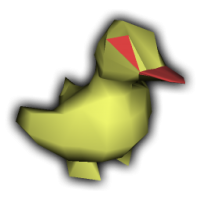

The Duck Programming Language official homepage
A simple scripting language based on the idea of duck-typing (or dynamic typing).
“When I see a bird that walks like a duck and swims like a duck and quacks like a duck, I call that bird a duck.” — James Whitcomb Riley
The duck programming language supports first-class functions, integer and floating-point arithmetic, string manipulation, dynamically-sized arrays, dictionary types, and basic object oriented programming. The syntax is strongly reminiscent of BASIC, Lua, or Python. While indentation is not strictly specified, the language does require specific whitespace in required newlines at the end of certain statements. Duck is currently only implemented in the form of a slow, interpreted frontend, making it useful strictly as a scripting language. This frontend has been developed entirely in C code.
The syntax of loops is somewhat different than in BASIC or other languages. For example, a while loop has the following syntax:
while condition do
// loop body
// ...
loop
while a for loop in Duck looks like this
for i = 1 to 10 do
// iterated instructions
// ...
// ...
loop
Notice the use of the syntax `do' and `loop.' There are a number of other example programs in the examples directory of the source repository. Additionally, there is the online interactive interpreter available here.
The programming language's grammar is defined in deterministic context-free Backas-Naur form, viewable here. The duck language has its own parser-generator, generating SLR(1) parse tables, so it is relatively easy to change the syntax of the language. Other optional ways to configure the language include disabling case-sensitivity or changing the format of comments, which are currently implemented as /* C-style block comments */, // full line comments, ; semicolon until end of line comments, and # any macro use.
It is easy to port libraries to Duck. Function hooks are implemented as pointers, of the form int (function_pointer)(int) where the argument count is passed as the only parameter. Arguments are bound as string identifiers, and are accessed dynamically in the bound-function's body.
Example:
void BindStandardLibrary()
{
VALUE duckStdLib = LinkNamespace("duck");
VALUE print = CreateFunction(DuckPrint);
AddParameter(print, "output");
LinkFunction(duckStdLib, "print", print);
LinkFunction(duckStdLib, "println", print);
VALUE prompt = CreateFunction(DuckPrompt);
LinkFunction(duckStdLib, "prompt", prompt);
}As an example of what a typical program might look like written in Duck, the following is an example of computing prime numbers.
function display_primes(limit)
count = 0
numbers = []
for i = 2 to limit do
numbers[i] = 1
loop
for i = 2 to limit do
if numbers[i] == 1 then
count = count + 1
for j = 2 to limit/i do
numbers[i*j] = 0
loop
duck.print(i)
end
loop
end
Duck has a standard library supporting both command-line input and output. See: stdduck.h. There are also SDL and OpenGL bindings to support graphical windowed programming.
Here is a list of those functions:
Duck uses CMake 2.8. To build simply run:
> cmake .
> make
Building gduck with SDL support requires SDL and OpenGL libraries. There are no platform specific libraries.
Greg Tourville - Team Duck (http://team-duck.com)
Hiroyuki Sano